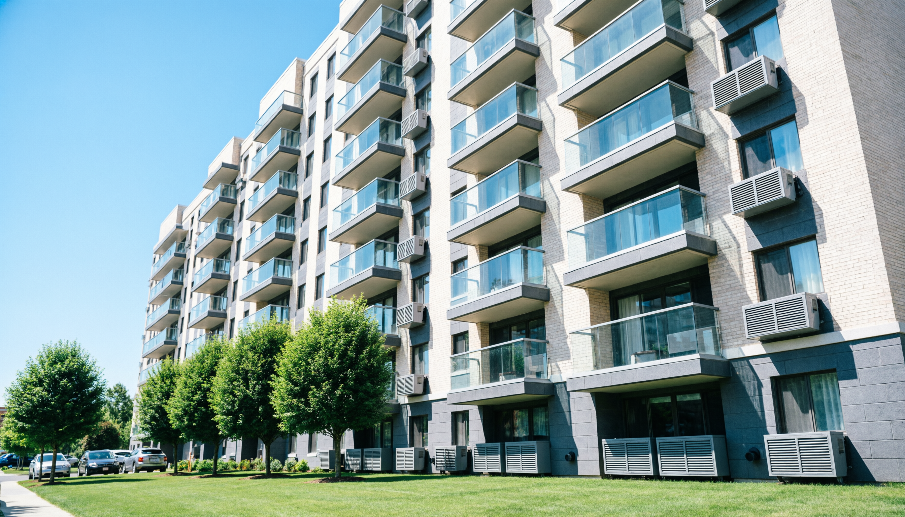
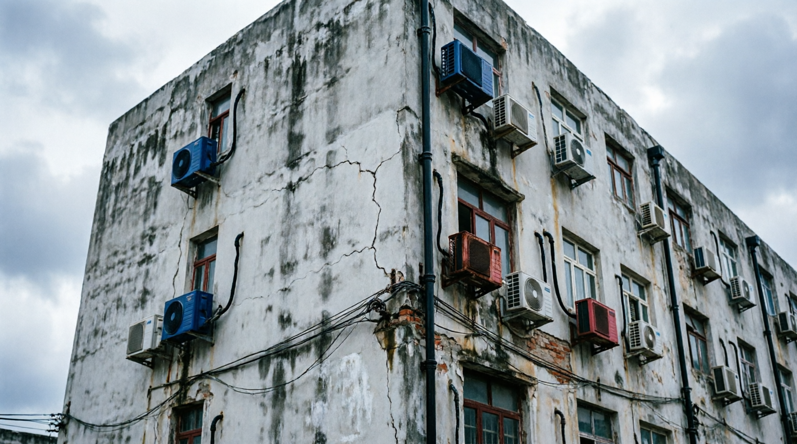
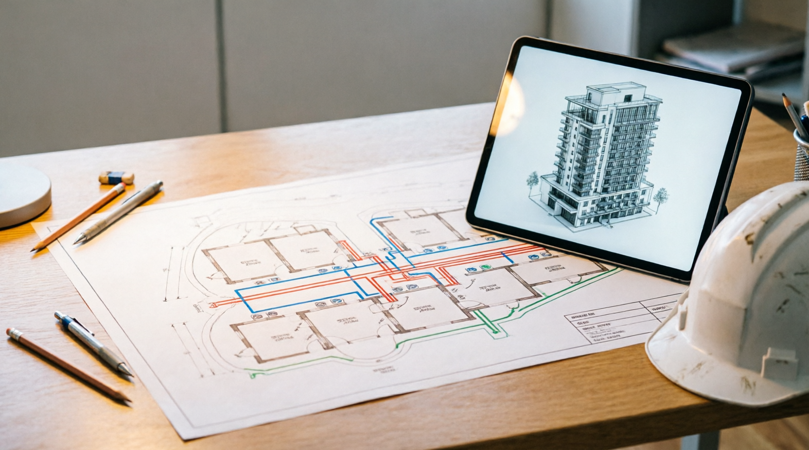
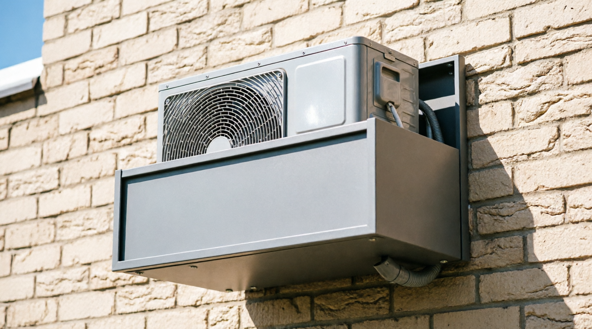
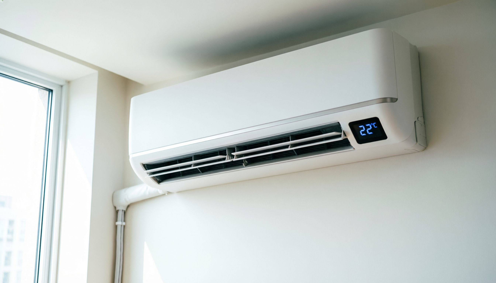
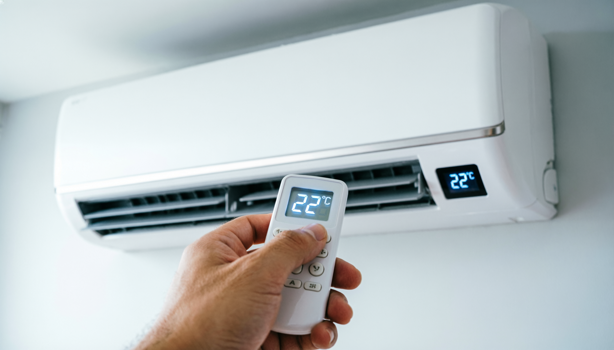
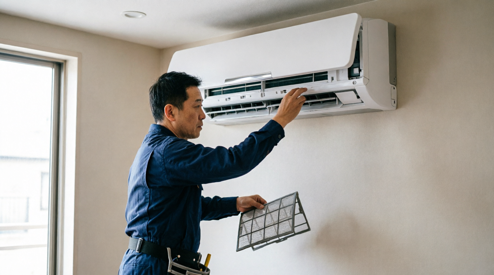
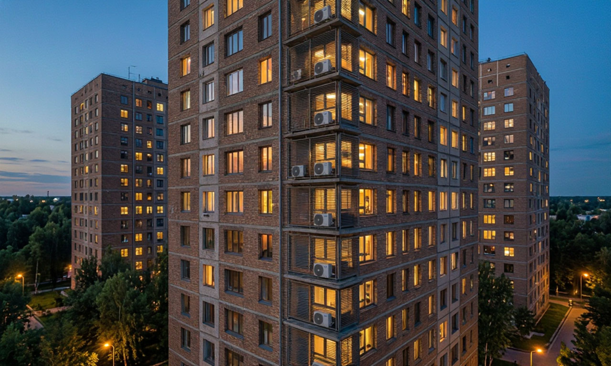

Комплексное кондиционирование ЖК «Северный парк»
Единый проект климатической системы для квартала комфорт-класса: 12–16 этажей, закрытый двор без машин, панорамное остекление.
Листайте стрелками под слайдом, клавишами ← → или точками-навигацией.


Самостийные блоки — беда фасада и УК
- Блоки разных моделей висят где попало — фасад теряет вид уже через год после сдачи.
- Дренаж выведен прямо на стену: потёки, пятна, вода капает на окна соседей снизу.
- Десятки разных подрядчиков — нет единой ответственности за монтаж и обслуживание.
- Жалобы жителей, штрафы за порчу фасада, аварийные вызовы вместо плановой работы.

Единый проект на этапе строительства
Кондиционирование закладывается в проект дома до сдачи, а не «докупается» жителями потом. Мы проектируем трассы, места под блоки и дренаж заранее.

Техническая корзина в цвет фасада
- Наружный блок скрыт в архитектурной корзине с жалюзийной решёткой — фасад остаётся чистым.
- Дренаж — только на внешнем блоке и организован в общий стояк: ничего не капает на стены и окна соседей.
- Корзина гасит шум — тихая работа даже ночью под окнами жилых комнат.

На стене жилой комнаты, возле окна
Внутренний блок ставим рядом с окном — ближе к внешнему блоку. Трасса получается короткой: меньше трубы и кабеля, монтаж проще и надёжнее.
Охлаждённый воздух идёт вдоль потолка, а не на кровать и рабочий стол. От блока сквозь стену уходит только межблочная трасса — никаких видимых коммуникаций в комнате.

Пульт, как телевизор
Никаких умных панелей и лишней проводки по стенам. Температура, режим, скорость вентилятора, таймер — всё с обычного пульта ДУ.
Два нажатия — и квартира живёт в своём климате. Привычно каждому жителю, обучать нечему, ломаться нечему.
Как идёт трасса от блока к блоку
- Оранжевая линия — межблочная трасса сквозь стену: трубка в изоляции + кабель.
- Синяя линия — дренаж с внешнего блока в общий стояк здания.
- От внутреннего блока дренажа нет — конденсат уходит на стороне внешнего блока.
- Короткая трасса = меньше потерь, тише работа, проще обслуживание.

Одна точка ответственности
- Плановое ТО по графику: чистка фильтров внутренних блоков, проверка внешних блоков и дренажа.
- Единый подрядчик и единая модель оборудования — всегда есть ЗИП, мастер знает систему наизусть.
- Никаких стихийных установок жильцами: фасад под защитой, жалобы сведены к минимуму.
- Сервис кондиционирования — дополнительная статья дохода УК, а не головная боль.

Целый фасад и спокойная УК
- Фасад годами держит вид: единые корзины, нет потёков дренажа и «лоскутного одеяла» из блоков.
- Меньше жалоб жителей: тихие внешние блоки, ничего не капает на окна соседям.
- У УК — один подрядчик, плановое ТО и предсказуемые расходы вместо аварийных вызовов.
- Жители получают комфортный климат с пультом в руке, без ремонта и согласований.
Обсудим внедрение для вашего объекта?
Презентация подготовлена Ярославом: структура, тексты слайдов, визуальное оформление и JS-навигация без библиотек. Нужна такая же упаковка инженерного решения для вашего ЖК или УК — напишите.